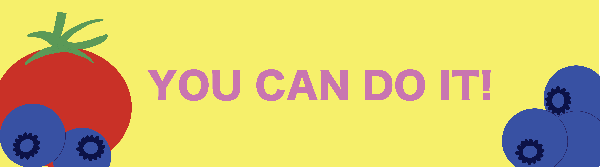

Use this space to create your to-do list. You can also check off items as you complete them. Remember to add tasks, not goals. Think about accomplishable projects, and be realistic about how much you can finish today. Here’s a suggestion – Add “Create a to-do list” to your list. That way, you can check it off right away and already have something done!
“You’re braver than you believe, stronger than you seem and smarter than you think.”
—Christopher Robin
